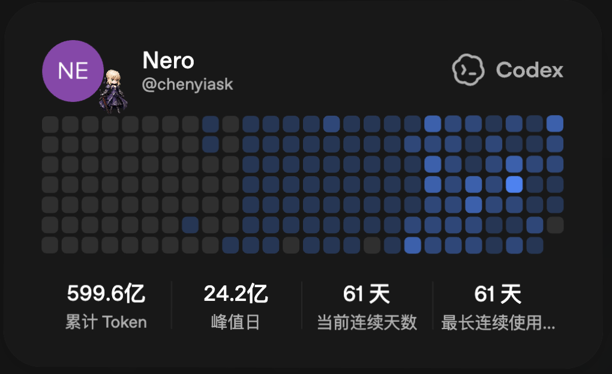

简历 / 复杂专业工作的人工智能产品化
陈祎
投资银行业务总监 | 人工智能应用与业务系统构建者
2019 年起从事投资银行业务，长期处理业务与财务核查、审核问询、披露文件和多专业协作。此后独立把这些高约束工作拆成可运行的人工智能业务系统，并把实践延伸到产业研究、知识库、写作和专业材料生产。
专业问题定义理解事实、规则、责任、复核和正式交付。
独立系统构建从业务架构、智能体运行到前端和验证。
真实工作采用由个人生产力扩展到小团队协同。

职业经历与项目
国金证券为一段完整任职。项目经历包括当前的新三板项目、ICKey 创业板 IPO，以及超捷股份、森松国际和台州水务等历史项目。
2019.09 — 至今国金证券投资银行业务，历经实习、项目执行、副总裁及业务总监阶段
复杂业务执行创业板 IPO、新三板、港股及债券项目中的业务财务核查与正式交付
完整任职
ICKey 公开披露
国金证券 · 投资银行业务总监
2019 年 9 月至今，历经实习、项目执行、副总裁和业务总监阶段。工作覆盖项目承揽与执行、业务财务核查、审核问询、披露文件、底稿和多专业中介协作。
ICKey（301563）创业板 IPO核心执行人员，主责业务与财务核查；负责收入、成本、毛利率、客户和供应商，全程参与业务财务问询回复。
厦门斯巴特股份有限公司新三板项目，负责业务与财务工作。
历史项目曾参与超捷股份、森松国际、台州水务等资本市场项目。
其他业务参与港股 IPO 承揽承销及城投公司小公募承揽。
代表项目 · ICKey（301563）创业板 IPO
业务财务核查与交付
业务与交易事实B2B / PCBA、SKU、仓储交付、客户服务和供应链边界。
财务真实性核查收入、成本、毛利率、客户供应商和库存管理交叉验证。
审核问询与披露业务财务问询回复、交易所沟通材料、招股书口径一致。
公开结果2025 年 9 月 30 日创业板上市，募资总额 43,953.37 万元。
项目背景
创业板 IPO 的高约束执行场景
上市申报、审核问询和披露文件需要把业务真实性、财务真实性、底稿证据、交易所沟通材料和招股书口径保持一致。这类项目训练的是复杂问题拆解、事实链管理和高压交付。
项目复杂度从受理、问询、注册到发行上市，跨越多个市场和行业周期。
核查主线把收入成本毛利、客户供应商、库存管理和实体清单影响边界拉通。
迁移能力把交易数据、SKU、仓储交付和客户服务转译为可审核叙事。
可公开信息 / 职责范围
公开事实股票代码、上市日期、发行价和募资总额来自公开披露文件。
个人职责核心执行人员；业务/财务主责；全程参与业务财务问询回复。
敏感边界不披露未公开客户细节、底稿细节、交易对手敏感信息。
AI 作品集
把高约束专业工作持续构造成可运行系统
借助 Codex 独立完成业务架构、智能体运行、前端、知识资产、验证和持续维护。作品已经从单点工具扩展为投行系统、专业 harness、知识库和生产工具组合。
业务系统 · Harness
知识资产 · 生产工具
知识资产 · 生产工具
持续构建强度
截至 2026 年 8 月 28 日，我已连续 61 天使用 Codex。系统运行、团队采用和正式交付仍是评价作品的主要依据。
599.6 亿累计 Token
24.2 亿峰值日
61 天当前及最长连续使用

AI 本地系统架构图
AI 本地系统架构图
模块、证据、数据、循环与输出
System
Evidence
Data
Agent Loop
Quality Gate
Output
Banker
共享证据库
Gold / M2
披露审阅
人审 / 冻结
问询 / 底稿
Principal
公开事实
Fact / Feature
Radar / Lens
Gate / Ledger
HTML-only
Nero Writer
选题 / 证据包
发布台账 / 归档
研究 → 写作 → 回写
人工编辑 / 质量门
公众号文章
Knowledge
IPO 案例 / 官方法规
全文 / 页码 / 版本
只读检索
来源与效力核验
案例 / 法规候选
投行专用人工智能系统
NERO Banker
面向 IPO 与新三板业务的本地系统，连接证据、业财分析、披露审阅、问询、底稿和人工复核。
自有 Agent Runtime
桌面端与前端
桌面端与前端
核心业务系统
业务界面不公开
NERO Banker
客户资料和业务界面不公开，以系统边界、运行机制和净化后的能力说明展示实际落地。
场景IPO / 新三板的证据、分析、披露、问询与底稿工作。
模块Agent Runtime、前端工作台、证据与数据层、领域 Skills 和质量门。
输出物业财分析、披露审阅、问询与底稿候选、运行记录和正式材料。
形成的能力把复杂专业责任拆成系统边界、业务模块、验证机制和人工决策点。
公开范围 / 统计口径
本地统计代码文件数和行数来自本机项目目录只读 git / wc 统计。
项目边界项目名可公开；不公开本地截图、客户资料和敏感路径。
结论边界AI 项目展示工作流构建能力，不把模型输出包装成投资或监管结论。
公众号长文
这里仅展示 Nero Writer 已登记发布的 12 篇公众号长文，公众号图片消息和小红书组图不纳入。点击标题可查看台账中的核心观点与发布状态。
观点与方法
从系统实践到可讨论的认知
Nero Writer 管理选题、证据、人工编辑、知识回写和发布归档；文章正文仍由我承担最终判断。